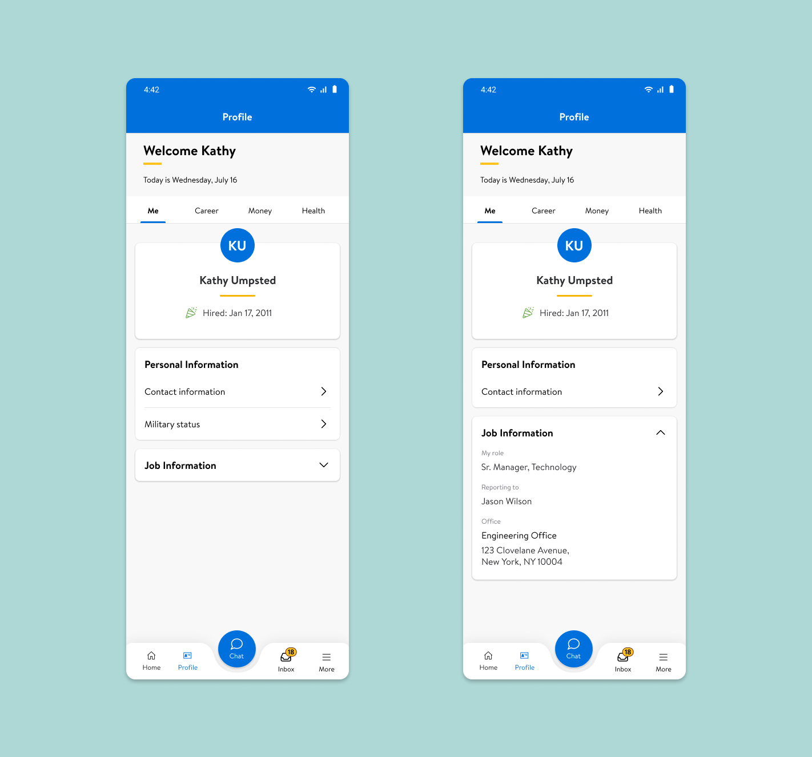
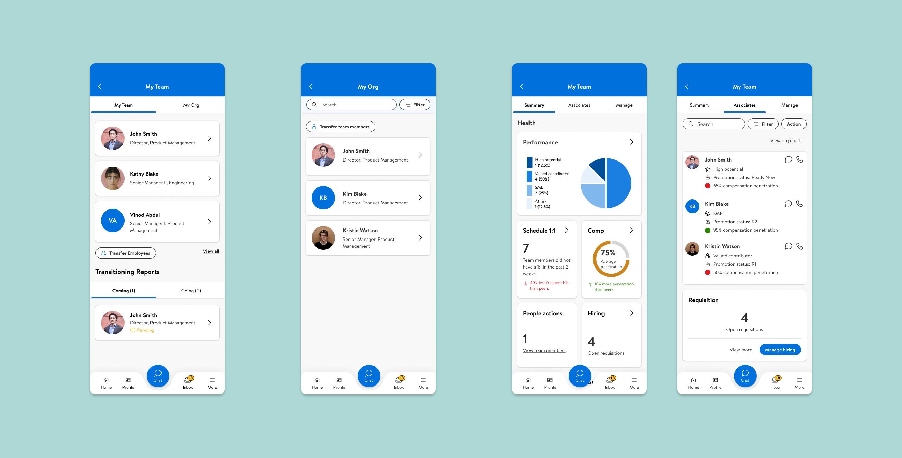

All-in-1 Integrated App for Walmart Internal Employees
Overview
I designed and iterated on the internal application for Walmart corporate office employees with two other designers. I was responsible for Profile, My Team, and Inbox flows for mobile and desktop screens.Role
UX/UI Designer
Date
March 2022 - August 2022
Company
Walmart
Introduction
Problem Statement
Human Resources (HR) tools and systems are scattered across external platforms, making it difficult to access and complete tasks.
Problems
- Multiple tools and platforms
- Manual process
- Missing relevant learning paths
- Time constraints
Goal
Make the convoluted HR processes simple
Target Audience
All Walmart employees working in the corporate office, such as directors, managers, engineers, and designers, are the target user, but managers were considered for creating initial persona and thus recruited for user testings.
Full Scope
The HR activities are historically application- and product-centric. The fully integrated app will be user-focused and action-based. It will provide the employees quick access to Me, Approvals Inbox, Career, Learning, Money, Chat, Campus, and My Org.
My Role
I was responsible for Me, Approvals Inbox, and My Org for mobile and desktop applications.
Design Process
Product Requirement
Product requirements were transmitted differently for each mini-app based on the complexity of the requirements and the particular product manager’s availability and preference.
- For Me and Approvals, I had meetings with the product manager to get acquainted with the project, where I took notes.
- For My Org, I received the product requirement document and user stories.
UX Requirement
The UX team delivered the design and UX requirements to the engineering team through presenting demos in weekly meetings, uploading recorded videos of the prototype on the Confluence page, and communicating in Microsoft Teams chat. At the beginning of each sprint, I presented the prototype, and the engineers would ask questions about the particular screen or feature. Throughout the sprint, they would reach out via Teams chat if there were additional questions or confusion. At the end of the sprint, the engineering team gave a demo of the features they worked on, for which the UX team reviewed and provided feedback had there been an inconsistency.
User Test
I participated in conducting three usability testing in the form of 1:1 interviews with a live Figma prototype using the System Usability Scale (SUS) score as the benchmark. The first one in April tested Homepage, Profile, Chat, and Inbox mobile screens and desktop experience to see if users can find the information they are looking for in the places they are looking at and whether the process is intuitive and efficient. Based on the findings, I made design changes to Profile and Inbox. The next one conducted in June was focused on My Org mobile flows and covered the Desktop homepage, profile, and chat screens. The main tasks included searching for people, giving feedback to a team member, transferring employees, and exiting an employee. Because My Org mini-app was gaining a lot of attention from business partners, the most recent usability test was carried out to understand the user experience with My Org and the intuitiveness of the information architecture for the integrated application and determine what design changes to make.
Drop 0 Profile - Users want to have their job information readily available, instead of having to go through another step. Also, they were not convinced that military status is more important than other personal information such as disability or sexual orientation. Thus, the design changes were made to reflect user needs.
Drop 0 Inbox - Users want to have the completed and pending tickets in separate inboxes.
Transfer Associates
This has been the most challenging part of the project. First, I familiarized myself with the existing transferring process. Then, based on user interviews, I identified the manager’s problems with the existing flows, such as having to go to different platforms for different steps and not being able to transfer multiple team members at once. After studying the existing tool and hearing these concerns, I have redesigned the Transfer Employees process.
Drop 1 My Team - Users want to be able to search people within their organization, see their team metrics, and manage their requisition openings and new hires in one place. While the managers also want to see their organization chart, including their supervisors and subordinates, the engineering team pushed back and the business decided to consider it for the later drop given the time and resource constraints.
Reflection
Working alongside product manager and engineering team, I learned to leverage different stakeholders. As the user experience designer, I would go into meetings with business partners and engineering to advocate for the user experience. After getting the product requirements from product manager, I would design for the end users, but deliver the design to the engineering team, who is the immediate audience for the design. It was a great experience to work cross-functionally, adapted to agile team structure.